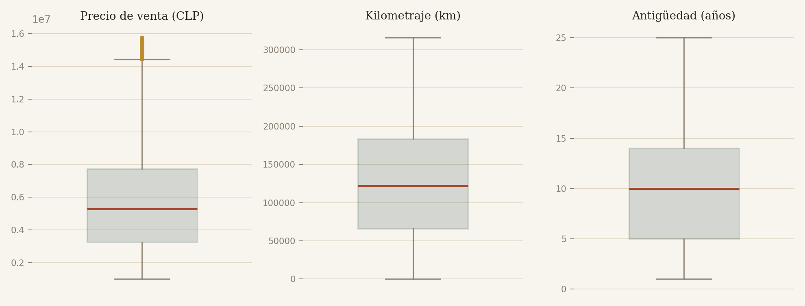
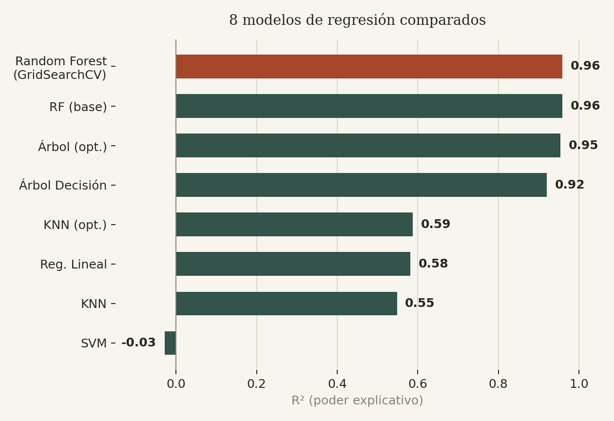
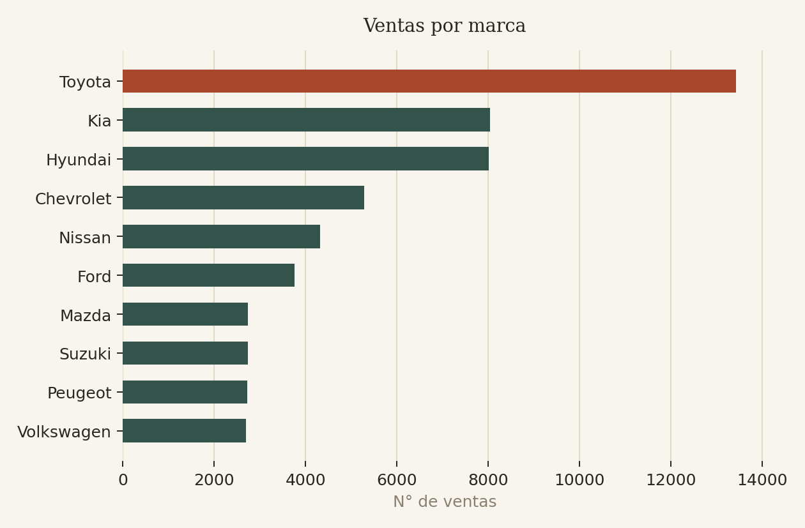
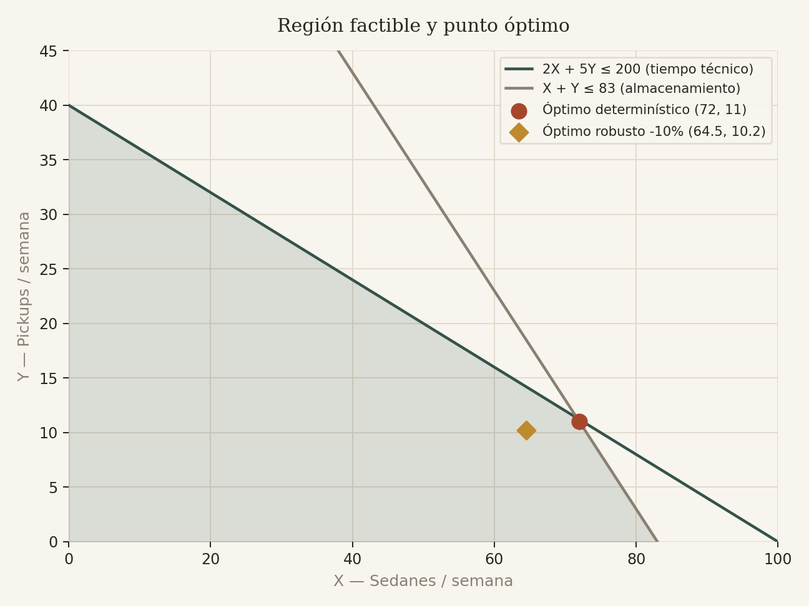
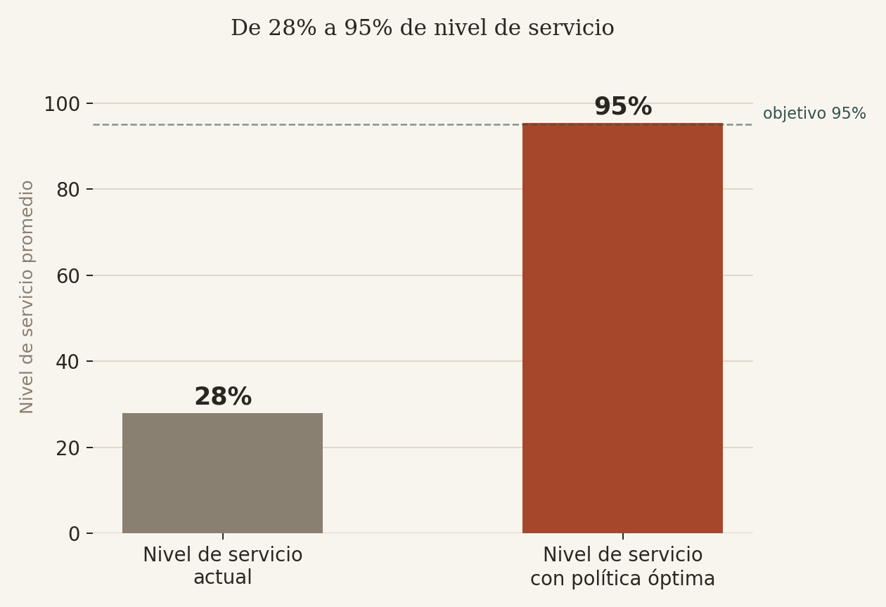

Trabajo con datos reales de un mercado que casi todos conocen — el de autos usados — para practicar todo el recorrido: limpiar, entender, modelar y explicar. Estos son los proyectos de los que más aprendí.
Antes de escribir una línea de código reviso de dónde viene la información, qué significa cada columna y dónde es probable que algo esté mal.
Duplicados, valores nulos y outliers no se eliminan por reflejo: cada decisión de limpieza queda documentada y es reproducible en Python.
Un modelo con 96% de precisión no sirve de nada si nadie entiende qué significa. Cada proyecto termina en una conclusión en lenguaje simple.
Los primeros cuatro parten del mismo dataset: 53.727 ventas de autos usados en Chile entre 2020 y 2025. El quinto es un proyecto de optimización de inventario para otra empresa. Cada uno responde una pregunta distinta.

El dataset original tenía de todo: categorías escritas de formas distintas, ventas duplicadas y precios que claramente eran errores de tipeo. Antes de poder sacar cualquier conclusión, tuve que entender esos problemas uno por uno y decidir qué hacer con cada tipo — no todos se resuelven de la misma forma.

Probé ocho algoritmos distintos de regresión para responder esa pregunta a partir del kilometraje, la antigüedad y el tipo de vehículo. Random Forest, con los hiperparámetros ajustados, fue el que mejor explicó el precio — muy por encima de modelos más simples como la regresión lineal o KNN.

Con frecuencias, medidas de tendencia central y correlaciones traté de entender qué hace que un auto se venda más caro. La respuesta no fue una sola variable: la combinación de antigüedad, marca y tipo de transmisión explica mucho más que cualquiera de ellas por separado.

Un ejercicio distinto: en vez de analizar el pasado, decidir hacia adelante. Modelé cuántos sedanes y pickups debería preparar una automotora cada semana para maximizar sus ingresos, respetando el tiempo técnico disponible y la capacidad de almacenamiento.

Un caso real de gestión de inventario: 70 productos críticos de una empresa de equipos de montaña, con un nivel de servicio de apenas 28% pese a comprar con frecuencia. Modelé la demanda de cada producto, simulé el sistema con cadenas de Markov y busqué, para cada uno, el punto exacto de reposición (s, S) que minimiza el costo total sin dejar de cumplir el nivel de servicio objetivo.
Soy analista de datos y me interesa sobre todo la parte del oficio que casi nadie muestra: los datos desordenados que hay que entender antes de poder analizarlos. Estos cuatro proyectos parten del mismo dataset — ventas de autos usados en Chile — precisamente para mostrar ese recorrido completo, de la limpieza a la conclusión.
Trabajo principalmente en Python (Pandas, Scikit-learn) y en R para modelos de optimización, y estoy cómodo tanto explorando datos como comunicando lo que encuentro a alguien que no necesita ver el código.
Estoy disponible para proyectos freelance y roles de analista. Escríbeme y con gusto conversamos.